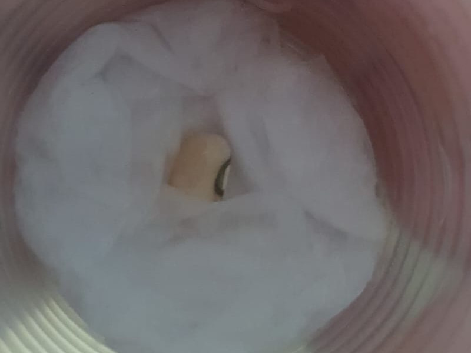
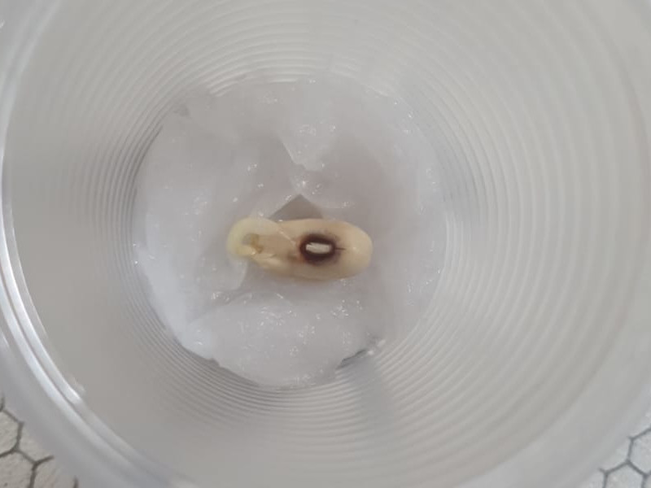
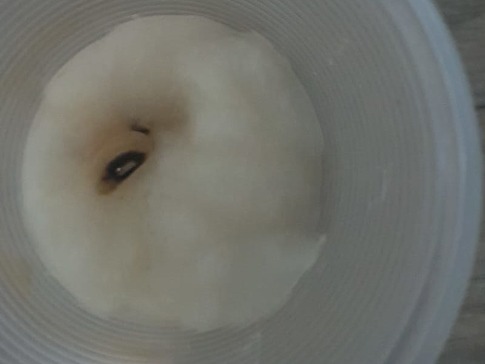
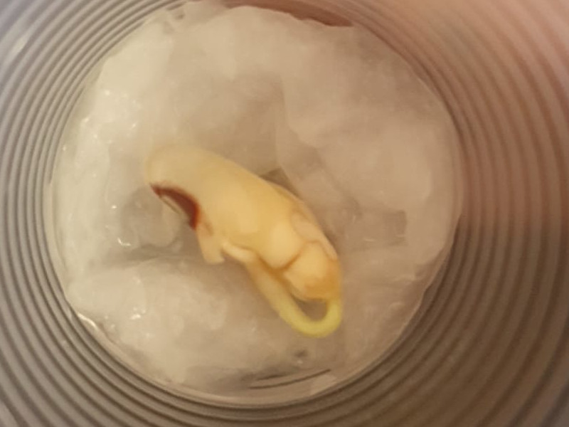
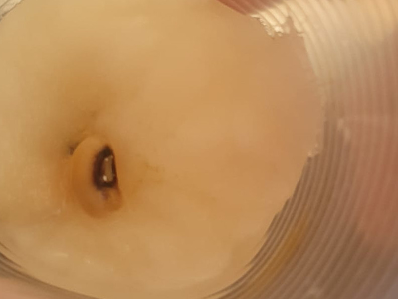
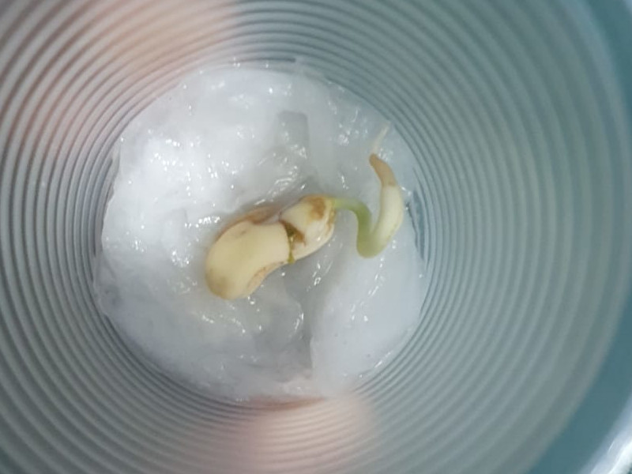
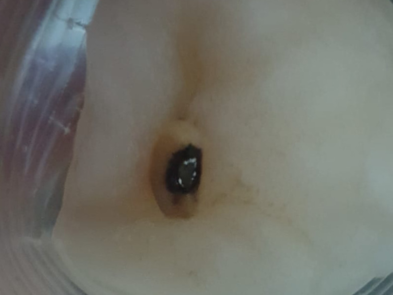

Dia 1
Sol ☀️
Sombra 🌑

Dia 2
Sol ☀️
Sombra 🌑
Dia 3
Sol ☀️
Sombra 🌑
Dia 4
Sol ☀️
Sombra 🌑
Perguntas
1) Quais foram as suas observações sobre o feijão que ficou no claro?
O feijão cresceu mais rápido do que o da sombra, e brotou até que bem rápido.
2) Quais foram suas observações sobre o feijão que ficou no escuro?
Ele cresceu bem lentamente, e começou a feder um pouco.
3) Os dois feijões brotaram e cresceram?
Não, apenas o feijão do sol.
4) Qual dos dois feijões parecia mais verde e nutrido ao final do experimento?
O feijão do sol.
5) Algum dos dois morreu ao final do experimento? Você sabe dizer o porquê?
Sim, o da sombra. Talvez ele tenha apodrecido por estar sem sol.
6) Essas observações corroboram com a hipótese inicial? Ou seja, você acha que o experimento teve sentido com a hipótese “as plantas se alimentam de luz”? Por quê?
Sim, o sol é muito importante para o crescimento e desenvolvimento das plantas.
7) Converse com seus amigos. Seus experimentos tiveram resultados parecidos ou diferentes?
Ainda não há resposta
8) Seu trabalho ficou mais parecido com a maioria ou foi muito diferente da maioria, pelo que você conseguiu analisar?
Ainda não há resposta